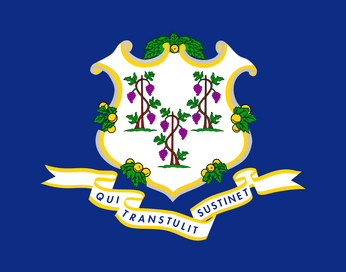

About Me
My name is Zach Sutherland. I grew up in and currently live in Connecticut, USA. I am a software development student at BYU-I and particularly enjoy designing computer applications, but am excited to learn about web and mobile development as well. I am a quality control manager at an adhesive manufacturing plant. In my free time, I like board games, puzzles and spending time with my girlfriend.
Connecticut, United States

Connecticut, known as the Constitution State, is located in the New England region of the northeastern United States. It is the southernmost state in New England and the third smallest state by area. Connecticut is bordered by Massachusetts to the north, Rhode Island to the east, New York to the west, and Long Island Sound to the south.